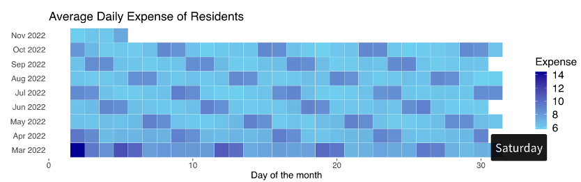
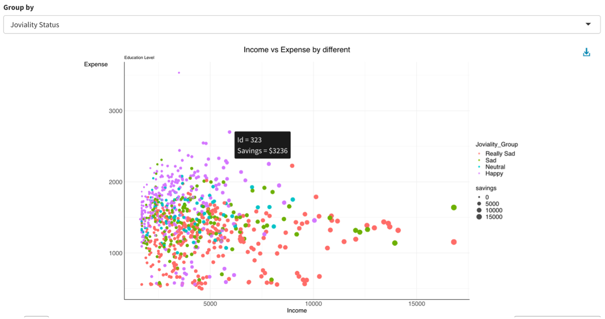
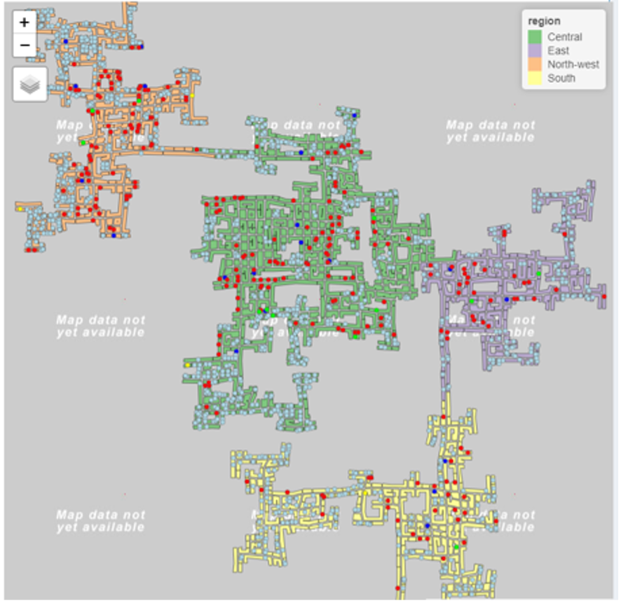
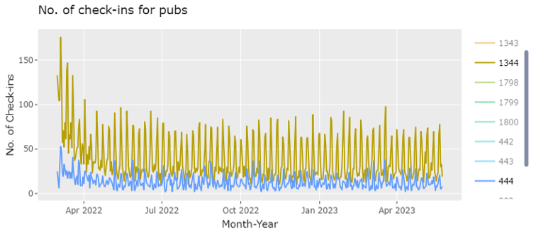
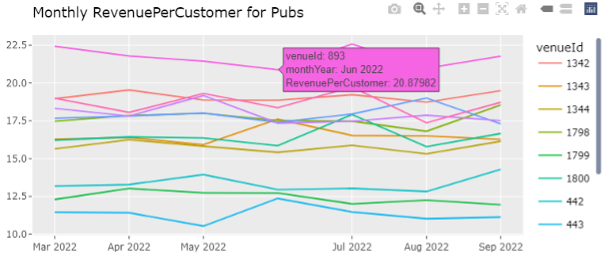
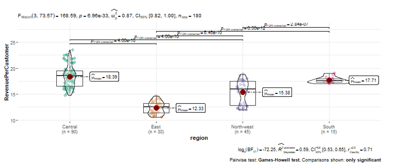

Visualizing the Demographics, Neighbourhoods and Business Base
=======Visualizing the Demographics, Neighbourhoods and Business Base in Engagement
>>>>>>> 9de61ae2def55446924788acff323a5e9155e080HUANG ANNI, NI JUNQIU, WANG TIANQI
School of Computing and Information Systems, Singapore Management University
Issues and problems
<<<<<<< HEADThe topic of this Visual Analytics Project will be based on VAST Challenge 2022. To understand the city’s demographics and relationships and answer questions from Challenge 1, our team will firstly characterize the demographics of the town. Also, we will describe the patterns in the social networks in the town. Lastly, we will identify the predominant business base of the town, and describe patterns observed.
=======posterdown [@R-rmarkdown] The topic of this Visual Analytics Project will be based on VAST Challenge 2022. To understand the city’s demographics and relationships and answer questions from Challenge 1, our team will firstly characterize the demographics of the town. Also, we will describe the patterns in the social networks in the town. Lastly, we will identify the predominant business base of the town, and describe patterns observed.
Motivation
To make better use of the data collected from the representative residents of Engagement, Ohio USA using the city’s urban planning app and democratize the data and analytics, our team use related visual analytic techniques. With the visual analytics of the city’s demographics, its neighborhoods, and its business base, we may be able to help the city planning team to understand the current state of the city and identify opportunities for future growth.
Approach
To learn about the city’s demographics, its neighborhoods, and its business base, our team build web-enabled visual analytics application by using R Shiny. The application will focus and emphasize on interactivity and effective integration of techniques from data analytics and data visualization. Related visual analytics packages in R include tidyverse, sf, plotly, ggstatsplot, ggraph, visNetwork, tmap and so on.
Results
Demographics The below dashboard containing the info boxes of distribution of wage, age and some plots such as the ratio of having kids in each age group, the average wage by education level.

Demographics and Wage There’s a shift of wage decreasing from March to November. People with higher education level has a significantly higher wage at any time.


Demographics and Expenditure The below heatmap shows average daily expense of residents, where we can tell that people spend more money on Saturday and Sunday.

What’s more, happy people spend more money compared to less happy people with the same income, while “really sad” people earn a lot but do not spend more.The average spending on each category is quite stable and people spend most of their money on food.


Social Network There is a significant change of the network of the city from 2022 March to 2023 March. The participant id displays for those who have higher betweenness centrality in the network. The betweenness centrality of participants decreases from 2022 March to 2023 March. That means in 2023 March, participants are more likely to interacting directly to each other compared to 2022 March when there are more participants can be seen as “bridges”.
With respect to different groups of participants, the visualization of the network also suggests that participants with higher centrality and more interactions with other person tend to have higher level of joviality.

Social Network with Groups The group is closer for “High School or College” participants, while the group is loose among “Low” education level participants who seldom interact with each other. Moreover, for groups except “Low” education level, they all demonstrated increasing connections within each group after one year.

Individual Participants in the Social Network As shown in previous graphs, we can identify participants who are more influential in the network. To further analyze those social influencers, we use visNetwork to interactively visualize the network by selecting the id of a specific participant. For example, we can choose id 566 who have higher centrality in 2022 March and visualize its network.

City Map The City of Engagement has total no. of 1,042 buildings that consist of 1,517 apartments, 253 employers, 12 pubs, 20 restaurants and 4 schools. Commercial buildings are mainly in the central areas in the city and are surrounded by residential buildings. Employers, pubs, and restaurants are also mainly located in these commercial buildings. Schools are mainly located next to residential areas. North-west region has more apartments as compared to east and south areas where fewer apartments are built.

Cost Analysis From the visualization, it seems those apartments located in central areas could have higher rental cost while apartments in the rural areas generally have lower rental cost.

Check-in Analysis Pub-1344 in central region has relatively high no. of check-ins, i.e., appear to be prosperous over the study period, as compared to other pubs in the town. Pub-444 in south region appear to be struggling in business due to lowest no. of check-ins. For restaurants, restaurant-1346 and restaurant-1801 have the lowest and highest no. of check-ins respectively but both are located in the north-west region.


Revenue Analysis Pub-893 in central region has the highest revenue per customer whereas pub-443 in the east region has the lowest revenue per customer. Take note that pub-443 also has relatively lower no. of check-ins.

For restaurant, interestingly that most of the restaurants have constant revenue per customer. Only restaurant-1349 in central region has a sudden peak of revenue per customer in Apr 2023.

From the pairwise test, it can be concluded that there’s significant difference in revenue for pubs and restaurants located in different regions due to the small p value. There’s correlation between revenue and food or pub cost too as shown in the correlation test.


Future Work
<<<<<<< HEADTo provide better user interactivity experience, we can further combine the social network and business base analysis to the demographics. By adding more features from the network analysis and business base analysis to the demographics interactivity, we may gain more insights to help the city planning team to find opportunities for future growth. We can also consider identify the traffic of the city and the daily routines of the participants to better describe the patterns of life. What’s more, we can consider the financial status of Engagement to evaluate the financial health of the city. In the future, we can apply similar techniques to other cities to help the city planning teams or other stakeholders to enhance the development of the city and solve other possible problems.
=======An explanation of how the work could be extended.
Aliquam sed faucibus risus, quis efficitur erat. Vestibulum semper mauris quis tempus eleifend. Aliquam sagittis dictum ipsum, quis viverra ligula eleifend ut. Curabitur sagittis vitae arcu eget faucibus. In non elementum felis. Duis et aliquam nunc. Nunc pulvinar sapien nunc, vel pretium nisi efficitur in. Fusce fringilla maximus leo et maximus. Fusce at ligula laoreet, iaculis mi at, auctor odio. Praesent sed elementum justo. Aenean consectetur risus rhoncus tincidunt efficitur. Praesent dictum mauris at diam maximus maximus [@R-posterdown].
An explanation of how the work could be extended.
Aliquam sed faucibus risus, quis efficitur erat. Vestibulum semper mauris quis tempus eleifend. Aliquam sagittis dictum ipsum, quis viverra ligula eleifend ut. Curabitur sagittis vitae arcu eget faucibus. In non elementum felis. Duis et aliquam nunc. Nunc pulvinar sapien nunc, vel pretium nisi efficitur in. Fusce fringilla maximus leo et maximus. Fusce at ligula laoreet, iaculis mi at, auctor odio. Praesent sed elementum justo. Aenean consectetur risus rhoncus tincidunt efficitur. Praesent dictum mauris at diam maximus maximus [@R-posterdown].
An explanation of how the work could be extended.
Aliquam sed faucibus risus, quis efficitur erat. Vestibulum semper mauris quis tempus eleifend. Aliquam sagittis dictum ipsum, quis viverra ligula eleifend ut. Curabitur sagittis vitae arcu eget faucibus. In non elementum felis. Duis et aliquam nunc. Nunc pulvinar sapien nunc, vel pretium nisi efficitur in. Fusce fringilla maximus leo et maximus. Fusce at ligula laoreet, iaculis mi at, auctor odio. Praesent sed elementum justo. Aenean consectetur risus rhoncus tincidunt efficitur. Praesent dictum mauris at diam maximus maximus [@R-posterdown].
An explanation of how the work could be extended.
Aliquam sed faucibus risus, quis efficitur erat. Vestibulum semper mauris quis tempus eleifend. Aliquam sagittis dictum ipsum, quis viverra ligula eleifend ut. Curabitur sagittis vitae arcu eget faucibus. In non elementum felis. Duis et aliquam nunc. Nunc pulvinar sapien nunc, vel pretium nisi efficitur in. Fusce fringilla maximus leo et maximus. Fusce at ligula laoreet, iaculis mi at, auctor odio. Praesent sed elementum justo. Aenean consectetur risus rhoncus tincidunt efficitur. Praesent dictum mauris at diam maximus maximus [@R-posterdown].
An explanation of how the work could be extended.
Aliquam sed faucibus risus, quis efficitur erat. Vestibulum semper mauris quis tempus eleifend. Aliquam sagittis dictum ipsum, quis viverra ligula eleifend ut. Curabitur sagittis vitae arcu eget faucibus. In non elementum felis. Duis et aliquam nunc. Nunc pulvinar sapien nunc, vel pretium nisi efficitur in. Fusce fringilla maximus leo et maximus. Fusce at ligula laoreet, iaculis mi at, auctor odio. Praesent sed elementum justo. Aenean consectetur risus rhoncus tincidunt efficitur. Praesent dictum mauris at diam maximus maximus [@R-posterdown].
>>>>>>> 9de61ae2def55446924788acff323a5e9155e080